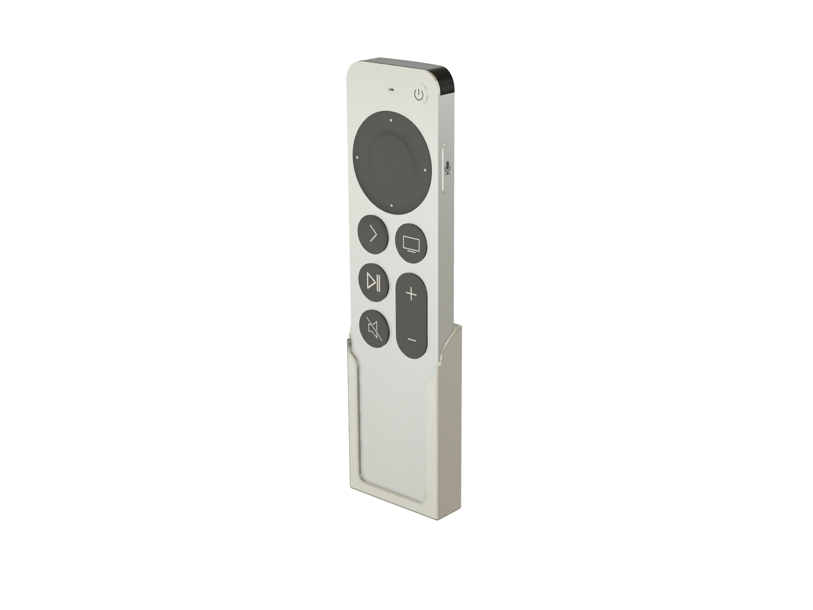
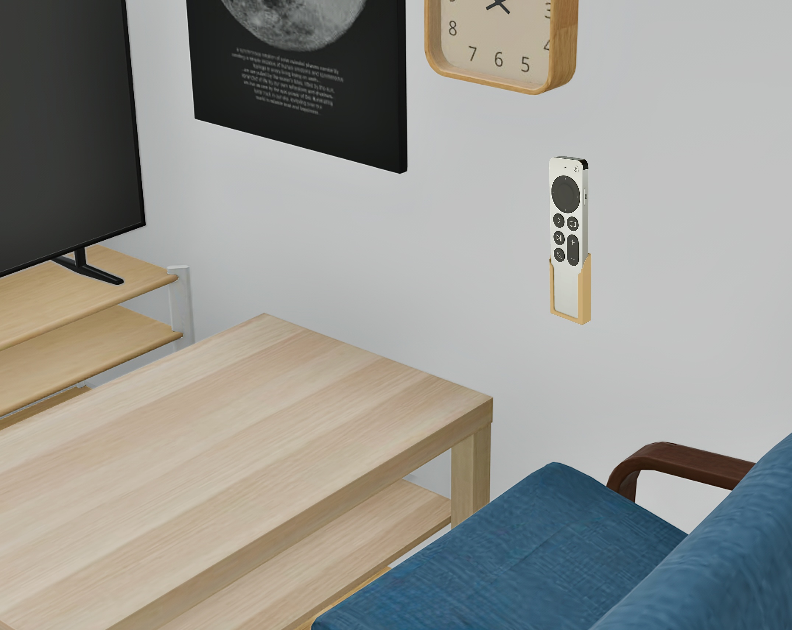
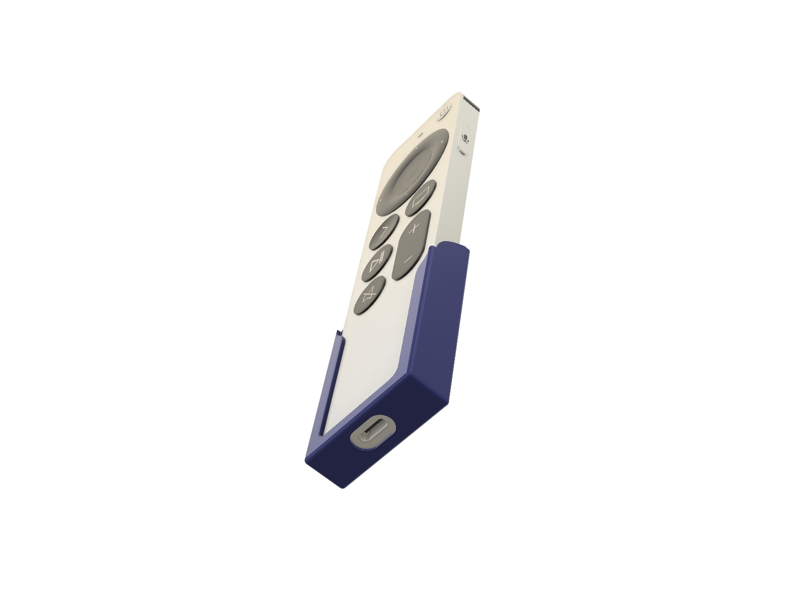
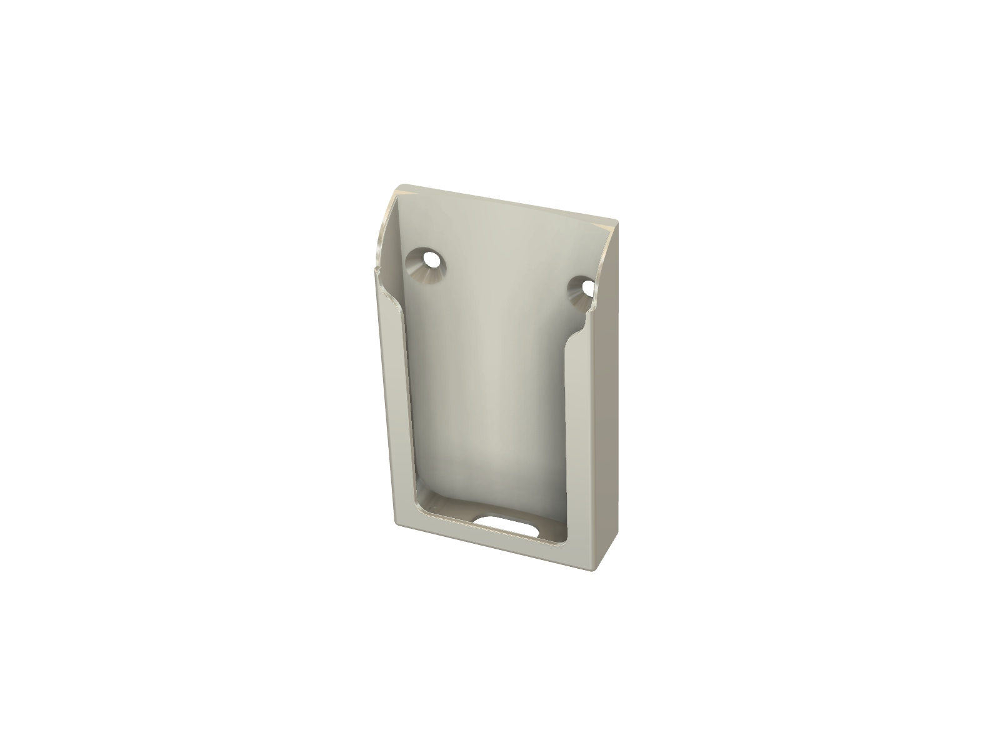
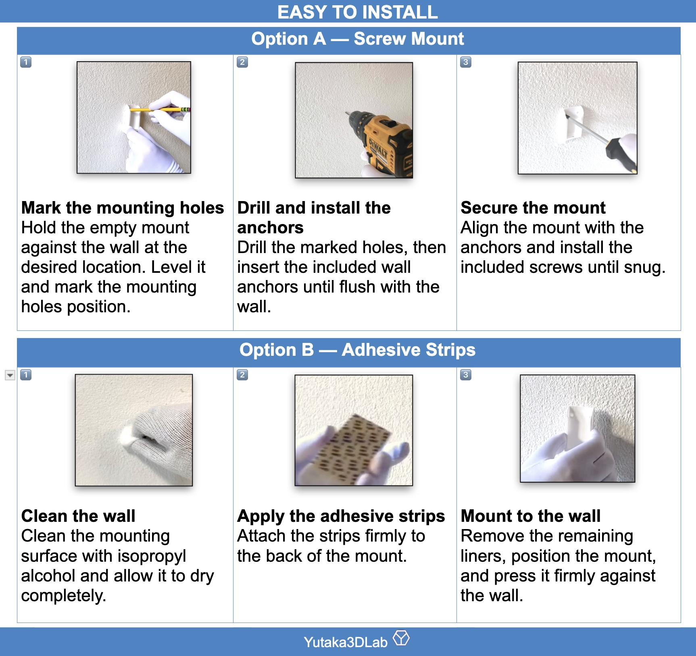
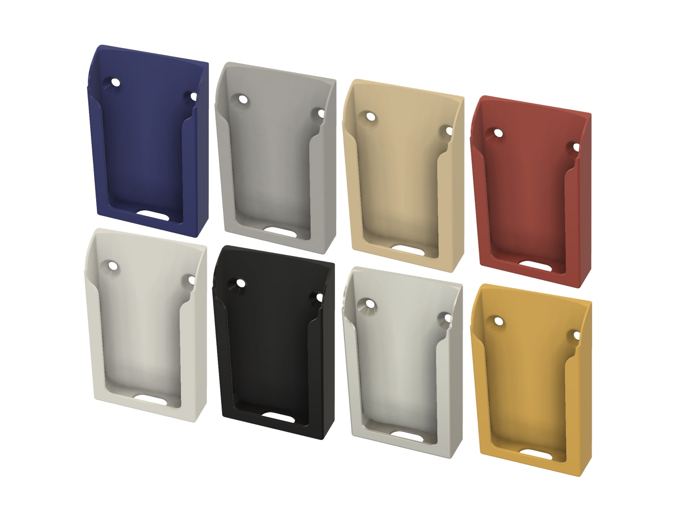
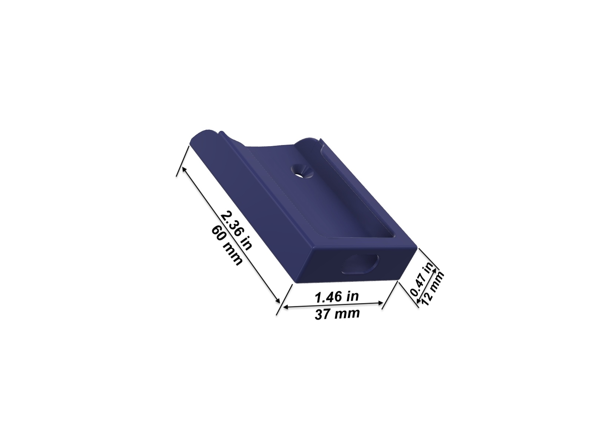
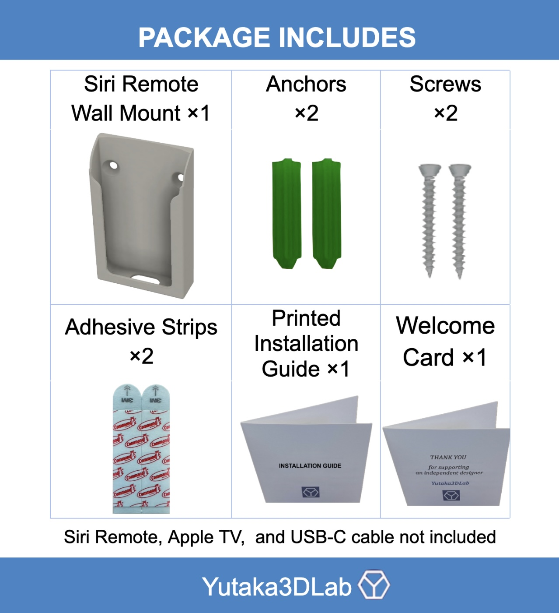

Contoured fit
The internal profile follows the shape of the Siri Remote for a stable fit with easy removal.

Apple TV
USB-C charging access · Screw or adhesive mounting · 8 colors
Keep the Siri Remote in a convenient, dedicated location. The contoured holder provides a stable fit while leaving the bottom USB-C charging port accessible.
The internal profile follows the shape of the Siri Remote for a stable fit with easy removal.
A bottom opening keeps the charging port accessible while the remote remains in the holder.
Install with screws and anchors or use adhesive strips for a no-drill setup.
Product overview
See the compact wall-mounted design and everyday fit.
Designed around the remote



Installation
Both installation methods use the same compact mount.
Mark the holes, install suitable anchors, and secure the mount with screws.
Clean the surface, apply suitable adhesive strips, position the mount, and follow the adhesive manufacturer’s required wait-time instructions.

Physical product
Choose White, Beige, Silver, Gray, Black, Blue, Yellow, or Red.

Specifications

Physical package

Choose your format
Buy the finished product or download the design for your own 3D printer.
Ready to use
3D printed, inspected and shipped ready to install.
For makers
Download the model from your preferred Yutaka3DLab marketplace.
Support
Contact Yutaka3DLab and include your order platform and product name so we can help quickly.
Apple, Apple TV, and Siri Remote are trademarks of Apple Inc. Yutaka3DLab is an independent designer and is not affiliated with or endorsed by Apple. Adhesive mounting performance depends on wall material, surface condition, preparation, and installation. Follow the adhesive manufacturer’s instructions.